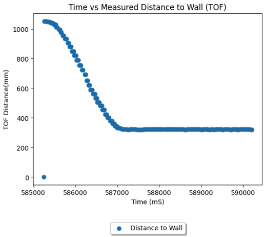
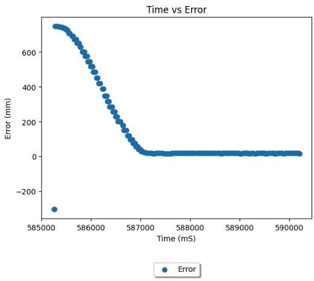
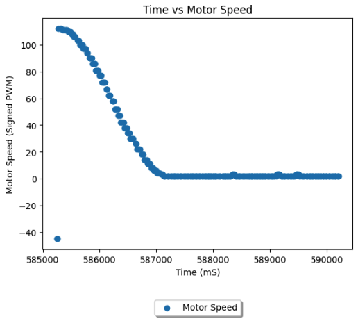
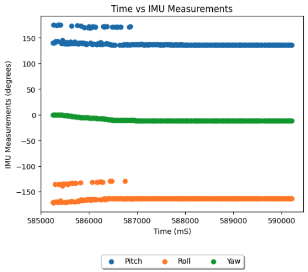

Lab 6
Objective:
In this lab, I integrate closed loop control, PID, into the sensor monitoring scripts from previous labs. Experimenting with the control, I created a proportional controller allowing the robot to drive up to a prescribed distance from the obstacle ahead.
Prelab
To collect debugging data, and to verify the performance of the controller, in the prelab I modified scripts from previous labs to send all sensor data from the robot to the Jupyter Notebook. While the lab guidance recommended sending data at once at the conclusion of the run, I chose intead to send data in packets of 3 timestamps while the run is ongoing. I opted for this to prevent onboard space being a limiting factor for run time, and to prevent there from being large (and thus longer lasting) transmissions needing to be made. Importantly, I ensured my approach to data collection did not significantly reduce my sampling rate, worsening my controller. In addition to the calculated IMU values, and the forward-facing TOF reading, I also transmit the speed of the motors (both are the same in this lab), and the current error in the controller. I use the string characteristic as in previous labs, and ensure there are no blocking statements slowing sampling.
Lab Tasks
Position Control Task
To create my PID controller, I began with the simplest form - propotional control. This would change the motor input proportional to the current error, the displacement between the robot currently and its target distance of 1 foot from the wall ahead. This was intergrated into the PID collection script above, and so is presented as an excerpt below. Given the lack of more complex maneuvers, additional sensor streams, and given the relative similarity in motor characteristics between my left and right motors, this controller was sufficient to achieve the target consistently. In order to determine the value for Kp, I wrote a simple command to change the value over Bluetooth, and reran the experiment many times, narrowing in on a fast controller without overshoot in binary search fashion.
Below are videos of controllers with too high a Kp (0.80), too low a Kp (0.05), and finally a reasonable one (0.15), starting from a distance of 40 inches to the wall. The reasonable controller brought the vehicle to a distance of 12 inches +/- 0.5 inches. Too high of a Kp was characterised by not braking quickly enough to prevent disasterous overshoot, while too low of a Kp was characterised by not providing enough drive to the motors to move. I found the braking distance changed driving on the tile surface of the lab, compared to the carpet shown below, but at the motor speed of the 0.15 Kp controller from 3 feet, the overshoot on smoother surfaces was still minimal.

The collected data for the run of the 0.15 Kp controller above had 416 timestamps over the 5 seconds collection interval, a sampling rate of one set per 12mS, are shown in the following plots.




While I believe with more time I can easily improve the speed of the robot with Ki and Kd terms, the accuracy of my stopping distance was sufficient for this lab. I reached a TOF measured distance of 314mm, 10mm off the target, from a starting distance of 1065mm within 2 seconds. The max motor PWM was 110, and the max speed achieved, imputed from the gradient of the time vs TOF graph, was ~50 cm/second.